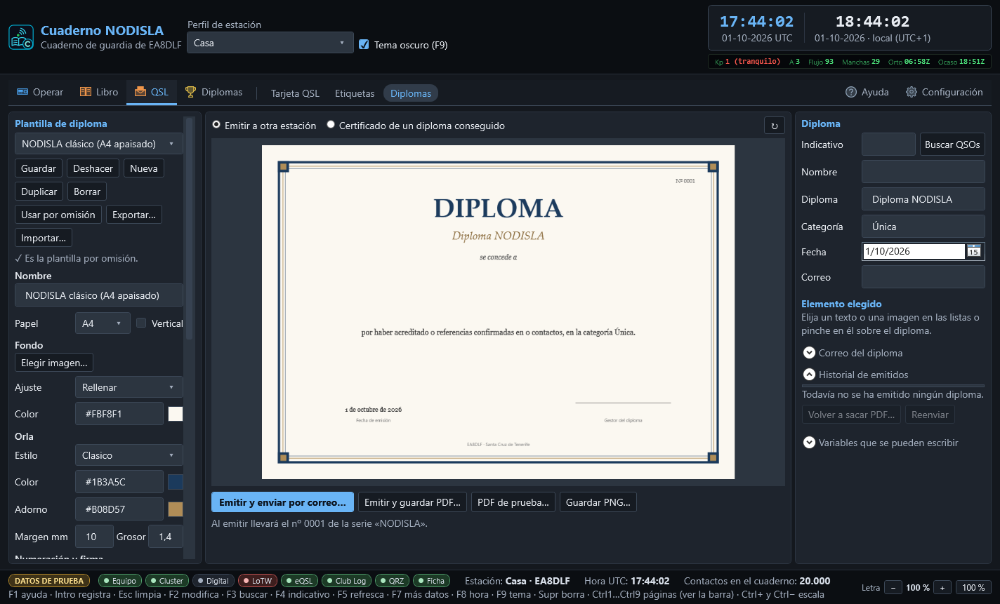
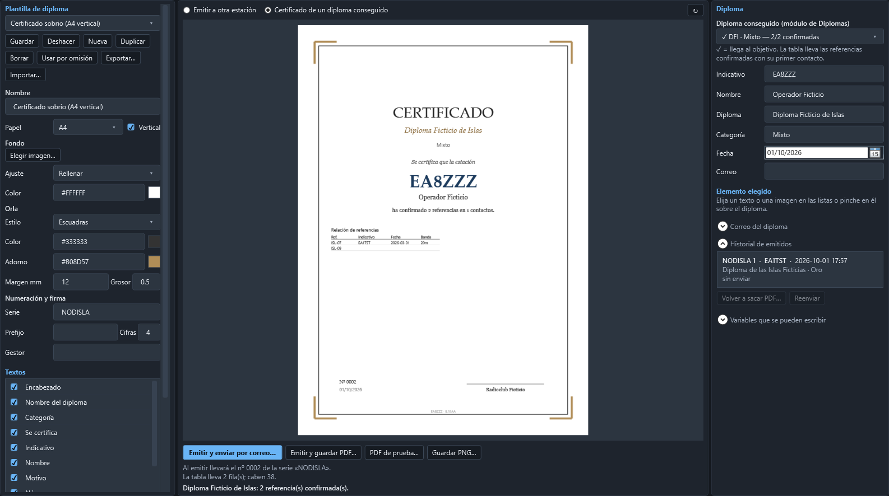
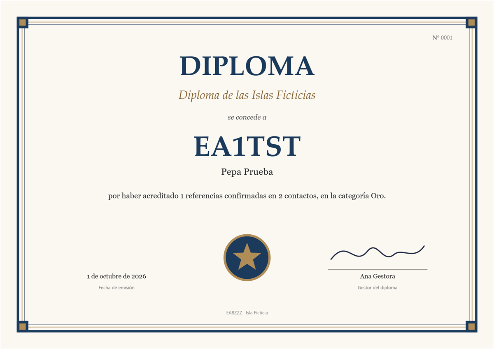

Diseñador de diplomas y certificados
En QSL › Diplomas (Ctrl Mayús 5) se diseñan e imprimen diplomas con el mismo editor que la tarjeta QSL: plantillas, fondo, textos que se arrastran y una vista previa que es el dibujo de verdad. Sirve para dos cosas:
- Emitir a otra estación un diploma propio o de club: se escribe su indicativo, el programa busca sus contactos en el cuaderno y lo rellena solo.
- Imprimir el certificado de un diploma conseguido, sacado del módulo de Diplomas, con la relación de referencias confirmadas.


La plantilla (columna izquierda)
- Plantilla — Guardar, Deshacer, Nueva, Duplicar (copia también sus imágenes), Borrar (una de fábrica vuelve a como venía), Usar por omisión, Exportar… e Importar…: un solo fichero
.diploma-nodislacon la plantilla y sus imágenes, para llevarla a otro equipo o pasársela a otro operador. Se guardan en la carpeta de datos, enqsl\diplomas\. - Papel — A4 o Carta, apaisado o Vertical. Al cambiarlo todo se recoloca en proporción.
- Fondo — una imagen (foto, textura de papel o una orla dibujada) con su ajuste, y el color del papel debajo.
- Orla — Filete, DobleFilete, Clasico (doble filete con cuadros en las esquinas) o Escuadras, con su color, su color de adorno, margen y grosor.
- Numeración y firma — la serie (cada serie numera por su cuenta; varias plantillas pueden compartirla), el prefijo (
EA8-,2026/…), las cifras y el gestor que firma. - Textos — los mismos campos que la QSL: letra, tamaño, color, alineación y, para párrafos, un ancho máximo a partir del cual el texto pasa a la línea siguiente.
- Logo, firma e imágenes — huecos preparados en las plantillas de fábrica; Elegir imagen… pone su logo o su firma escaneada. La imagen se copia a la carpeta de la plantilla.
- Tabla de referencias o contactos — opcional: posición, bloques uno al lado de otro, letra y columnas. Lo que no cabe sale en hojas de anexo del PDF con la misma orla.
Plantillas de fábrica: NODISLA clásico (A4 apaisado), NODISLA atlántico, con tabla, Certificado sobrio (A4 vertical) y Volcán (Carta apaisado). Sobrias, en los colores de NODISLA y sin marcas de nadie.
A quién va (columna derecha)
- Emitir a otra estación — escriba el indicativo y pulse Buscar QSOs: sale la lista de contactos (desmarque los que no cuenten) y se rellenan el nombre y el correo si el contacto o su ficha los tienen.
- Certificado de un diploma conseguido — elija el diploma (✓ = llega al objetivo). El certificado lleva su indicativo, el diploma, la variante como categoría, la entidad que lo concede y la tabla de referencias confirmadas con su primer contacto.


Variables
| Variable | Qué pone |
|---|---|
{indicativo} {nombre} | Quien recibe el diploma |
{diploma} {categoria} | Nombre del diploma y categoría o nivel |
{numero} {serie} | Número correlativo (con prefijo y ceros) y su serie |
{fecha} {fechacorta} {fechaiso} | Fecha de emisión: «30 de septiembre de 2026», 30/09/2026, 2026-09-30 |
{referencias} {qsos} | Cuántas referencias y cuántos contactos lo justifican |
{primerqso} {ultimoqso} {bandas} {modos} | Resumen de los contactos |
{entidad} {gestor} | Quien lo concede y quien firma |
{miindicativo} {minombre} {miqth} {milocalizador} | Mi estación |
En las columnas de la tabla: {referencia} {nombrereferencia} {indicativo} {fecha} {hora} {banda} {modo} {rst} {n}.
Emitir, imprimir y enviar
- Emitir y guardar PDF… — le da el siguiente número de la serie, lo apunta en el historial y guarda el PDF (del tamaño del papel, con el texto buscable).
- Emitir y enviar por correo… — igual, y lo manda en PDF por el mismo servidor que las QSL (Configuración › Correo de las QSL), con el asunto y el texto de «Correo del diploma».
- PDF de prueba… y Guardar PNG… — sin emitir, para revisar: el número que se ve es el que le tocaría.
- Historial de emitidos — quién, cuándo, con qué número y si se mandó. Volver a sacar PDF… lo reimprime con el mismo número y los datos de entonces; Reenviar lo vuelve a mandar.
Un número emitido no se repite nunca: va en el cuaderno, y la base de datos rechaza dos diplomas con el mismo número en la misma serie.

